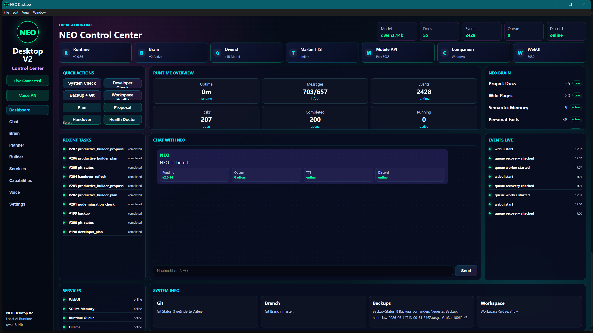

🧠 Brain
Personal Memory, Semantic Memory, Wiki, Project Context, source-aware recall and explicit memory write.
LOCAL AI · NANOCLAW · NEO
Ich baue mit NanoClaw / NEO ein lokales AI-Runtime-System mit NEO Desktop App als Control Center, Ollama, SQLite Memory, Health Doctor, Productive Builder, Discord Voice, TTS, Android Companion und Runtime Queue.
Personal Memory, Semantic Memory, Wiki, Project Context, source-aware recall and explicit memory write.
Runtime Queue, Health Doctor V2, concrete diagnostics, Tasks, Events, Git Status, Backup and Build Checks.
Productive Builder Workflow with Plan, Identify Files, Backup, Proposal, Approval, Build and Learning Episodes.
Android app, mobile dictation, Discord Voice, Martin / Kokoro TTS and local WebUI API.
CONTROL CENTER
